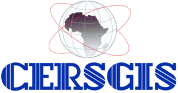
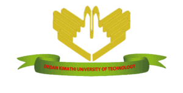

Anuncio de premios para conjuntos de datos de aprendizaje automático sobre clima y bosques
29 October 2024
En 2023, Lacuna Fund lanzó su primera convocatoria de propuestas sobre Clima y bosques en nuestro dominio de Clima. Hoy anunciaremos a 14 galardonados que han recibido financiamiento para crear conjuntos de datos dentro de este enfoque. Esta convocatoria fue posible gracias al financiamiento del programa “FAIR Forward – Inteligencia artificial para todos” del GIZ en nombre del Ministerio Federal Alemán de Cooperación y Desarrollo Económico (BMZ).
Estos equipos trabajarán para crear conjuntos de datos sobre aprendizaje automático que promuevan esfuerzos en el dominio forestal para comprender, mitigar y adaptarse al cambio climático. Desde las Galápagos hasta la cuenca del Congo, estos proyectos abarcan una gran variedad de regiones y contextos forestales, y abordan el cambio en el uso del suelo y la deforestación, los conflictos entre seres humanos y fauna salvaje, la financiación climática, los créditos de carbono y mucho más. En contextos de ingresos bajos y medios (LMIC) en todo el mundo, el uso eficaz del aprendizaje automático se ve obstaculizado por la falta de datos fidedignos de referencia. Esperamos que estos beneficiarios de Lacuna Fund de África, América Latina y Asia Meridional y Sudoriental contribuyan a cerrar estas brechas y a desarrollar conjuntos de datos abiertos y accesibles sobre formación y evaluación.
Queremos reconocer y agradecer a nuestro Panel Asesor Técnico de Clima y bosques de 2023 noy a los revisores asociados por su trabajo a la hora de simplificar un vasto grupo de aplicaciones y seleccionar una cartera diversa de proyectos para financiar: Darlington Akogo, Jackson Efitre, Meryl Cohen, Praveen Mokkapati, Rebecca Ryakitimbo, Swetha Kolluri, Tara O’Shea, Vishwas Chitale. Más información sobre los miembros del Grupo de Asesoramiento sobre Clima y Bosques..
Siga leyendo para obtener más información sobre estos equipos y los conjuntos de datos que están desarrollando.
Lacuna Fund es una coalición de financiadores, científicos de datos y usuarios de datos, como The Rockefeller Foundation, Google.org, el Centro Internacional de Investigaciones para el Desarrollo de Canadá, el Ministerio Federal de Cooperación Económica y Desarrollo (BMZ) de Alemania, Wellcome, Gordon and Betty Moore Foundation, Patrick J. McGovern Foundation y Robert Wood Johnson Foundation, con un compromiso en pos de cubrir las carencias de datos y hacer que el aprendizaje automático y la IA sean más equitativos, precisos y accesibles en todo el mundo.
Conjunto de datos de aprendizaje automático para Ecuador continental y Galápagos
Contacto: Carmen Josse | carmenjosse@ecociencia.org
Este equipo utilizará los datos existentes para crear un nuevo conjunto de datos de clasificación de la cubierta terrestre del Ecuador continental y las islas Galápagos que pueda utilizarse para entrenar modelos multiespectrales de aprendizaje automático de observación de la Tierra (EO). El equipo aspira a crear un conjunto de datos compuesto por 30 000 puntos, los cuales deben cubrir una superficie total de 257 215,3 kilómetros cuadrados. El conjunto de datos proporcionará información sobre las categorías de uso/cubierta del suelo (de 20 tipos) y el estado de conservación (es decir, presencia o ausencia dentro de un área protegida o territorio indígena), entre los años 1985 a 2022.
Este conjunto de datos permitirá comprender mejor la dinámica de transformación de la tierra que está teniendo lugar, como la conversión de bosques en monocultivos de aceite de palma, la transformación de manglares en acuicultura de camarones, las masas de agua y la vegetación estuarina afectadas por la minería, los pastizales naturales invadidos por plantaciones forestales en expansión, etc. También tiene el potencial de identificar casos de recuperación. Por ejemplo, con los datos de las Galápagos, podría estimarse si los programas de control de especies invasoras han tenido un impacto positivo en la regeneración de la vegetación o si los incentivos forestales gubernamentales impulsan la reducción de la deforestación en la Amazonia ecuatoriana. El estado de conservación del suelo tiene el potencial de predecir el riesgo de transformación futura.
“Las tendencias temporales de la cubierta y el uso del suelo son esenciales para comprender el estado de la cubierta natural restante y las tendencias de cambio. Sin embargo, la comprensión de los factores que impulsan los cambios en el uso y la cobertura del suelo con precisión local ha demostrado ser un reto cuando se trabaja con los conjuntos de datos existentes a escala mundial. El apoyo de Lacuna Fund nos permitirá crear un conjunto de datos preciso que mejorará nuestra capacidad de discriminar clases de uso del suelo que sean descriptivas tanto temporal como espacialmente. Esta financiación también servirá para obtener una capa adicional de datos en apoyo de proyectos destinados a reducir la presión sobre los bosques en pie y ayudar a mantener los sistemas socio-naturales que han impedido con éxito la conversión de los bosques para usos antropogénicos”.
— Wagner Holguín, coordinador de MapBiomas Ecuador, Fundación Ecociencia.

Secuestro de carbono forestal en la cuenca del Congo: combinación de datos in situ e inteligencia artificial para desbloquear la financiación climática
Contacto: Kendie Kenmoe | kkenmoe@wri.org y Nancy Harris | nancy.harris@wri.org
Los bosques desempeñan un papel importante en la mitigación del cambio climático, aunque, debido a la escasez de datos de inventarios forestales abiertos y de modelos de crecimiento forestal calibrados localmente para África Central, es difícil evaluar los efectos del cambio climático en la dinámica del carbono forestal. Esto, por ende, limita la capacidad de acceder a la financiación climática de los gobiernos. Para abordar esta cuestión, este proyecto volverá a medir 65 parcelas muestreadas sobre el terreno en bosques de la República Democrática del Congo (RDC) y Camerún. Los datos recogidos de estas parcelas se fusionarán en una base de datos de más de 2 millones de parcelas de inventario de todo el mundo y se utilizarán para entrenar y validar un modelo geoespacial de crecimiento forestal basado en IA. Los mapas elaborados a partir de este proyecto mostrarán la dinámica pasada, presente y futura de la distribución de las especies arbóreas, la dominancia de las especies y los cambios asociados en la captura de carbono forestal, así como la biodiversidad y la calidad de la madera a lo largo del tiempo.
Todos los datos y mapas de campo serán de libre acceso, se verificarán con los ministerios gubernamentales pertinentes y se integrarán en los Atlas Forestales Nacionales del Instituto de Recursos Mundiales para la RDC y Camerún. Los datos pueden utilizarse para establecer niveles de referencia forestal creíbles y pertinentes a nivel local que puedan desbloquear el “plus” de la financiación disponible para el carbono de REDD+, lo que da lugar a una gestión forestal sostenible y una mejora de las reservas forestales de carbono. Con el aumento del acceso equitativo a los datos, se incrementará la financiación climática para soluciones basadas en la naturaleza en las regiones que más lo necesitan y, de este modo, este proyecto mejorará los resultados climáticos y forestales.
“En un momento en que la cuenca del Congo se ha convertido en el sumidero de carbono más importante de la selva tropical y en uno de los puntos de mayor biodiversidad del mundo, comprender y seguir su dinámica es más urgente que nunca si queremos alcanzar los objetivos climáticos y de biodiversidad globales para 2030. Con el apoyo de Lacuna Fund, nuestro proyecto ayudará a poner el aprendizaje automático al alcance de los científicos que trabajan sobre el terreno para vigilar este ecosistema. Pondrá a prueba tecnologías innovadoras para cerrar las brechas en el conocimiento y ayudar a acelerar la acción hacia una mejor gestión de estas selvas tropicales, garantizando un mundo mejor para las personas, la naturaleza y el clima”.
— Teodyl Nkuintchua, responsable de Estrategia y Participación en la Cuenca del Congo y director nacional para la República del Congo, World Resources Institute Africa.
Proyecto Ltome-Katip (Proyecto “Elefante-Rata”): etiquetado indígena para una IA inclusiva en la lucha contra los conflictos entre seres humanos y fauna salvaje y el cambio climático
Contacto: Diana Mastracci Sánchez diana@space4innovation.com
Este proyecto es una iniciativa pionera dedicada a generar datos con etiquetado indígena para el aprendizaje automático y la IA. A cargo de Namunyak Wildlife Conservancy, Space4Innovation y la Estación Biológica Indígena Musap (y encabezado por la nación shuar de la Amazonia ecuatoriana y la tribu samburu del norte de Kenia), este proyecto aborda la urgente necesidad de datos con etiquetas indígenas para el aprendizaje automático. En colaboración con el Instituto de Tecnología de Rochester y la Alianza Indígena GEO, el proyecto se centra en regiones muy afectadas por el cambio climático; a saber, la selva amazónica y el norte de Kenia. La misión del equipo es revolucionar los enfoques sobre los conflictos entre el hombre y la fauna silvestre y la resistencia al cambio climático.
Gracias a la participación activa de las comunidades indígenas en la recopilación de datos, el etiquetado y la elaboración de mapas, el equipo podrá cerrar brechas críticas en la comprensión del cambio climático, los conflictos entre el hombre y la fauna, y la forestación y deforestación. Con esta colaboración, no solo se protege a una biodiversidad inestimable y se preserva la identidad indígena, sino que también se capacita a las comunidades al garantizar soluciones culturalmente pertinentes y eficaces. Mediante la integración de los conocimientos indígenas y la tecnología de punta, el equipo estará en condiciones de marcar una diferencia tangible en la vida de las personas y la fauna de estas regiones vitales, y, al mismo tiempo, reducir el sesgo y la incertidumbre de los modelos de IA.
“Mediante la integración de los conocimientos indígenas y la tecnología de vanguardia, el proyecto Ltome-Katip no solo aborda los apremiantes retos medioambientales y técnicos del aprendizaje automático, sino que capacita a las comunidades indígenas para liderar los esfuerzos de conservación. Esta iniciativa, en colaboración con el Instituto Rochester y Space4Innovation, representa una auténtica asociación entre la tribu shuar de la Amazonia ecuatoriana y la tribu samburu del norte de Kenia, y pone de manifiesto el poder de la colaboración y los conocimientos indígenas para salvaguardar la biodiversidad de nuestro planeta”.
— Mario Vargas Shakaim (Shuar), Proyecto de Vigilancia Indígena Ltome-Katip Alianza Indígena GEO
Conjunto de datos sobre biomasa en África: Mediciones de biomasa in situ en tres manglares de Costa de Marfil
Contacto: Therence Temfack therence.temfack@data354.co
Los manglares desempeñan un papel clave en la resistencia al cambio climático, especialmente en la captura de carbono. Con este proyecto, se recogerán datos de misiones sobre el terreno en varios manglares de Costa de Marfil, y se los etiquetará con las correspondientes reservas de biomasa y carbono. Estos datos sobre el terreno se asociarán a las correspondientes imágenes de satélite para desarrollar un modelo de IA capaz de estimar la biomasa y las reservas de carbono por encima y por debajo del suelo de forma remota. Este proyecto contribuirá a la protección y expansión de los bosques al facilitar el acceso a los créditos de carbono y otros pagos de servicios medioambientales.
En lo que respecta al seguimiento y cálculo de las reservas forestales de carbono, sigue existiendo un importante cuello de botella tecnológico que bloquea el desarrollo a gran escala de los créditos de carbono forestal en Costa de Marfil, y que debe superarse rápidamente. La detección remota es una herramienta útil en el proceso de seguimiento de los bosques, aunque deberían realizarse más estudios para que sea posible satisfacer la necesidad de evaluación a menor escala y medir directamente la biomasa. De este modo, podemos ayudar a los responsables a orientar sus políticas de conservación, pero también apoyar el proceso de recompensar a los pequeños actores, como los productores agrícolas implicados en la agrosilvicultura, la silvicultura privada, etc. Nuestro objetivo, con los fondos recaudados, es proporcionar datos prácticos de campo para entrenar mejor los algoritmos de inteligencia artificial para la cartografía dinámica de la biomasa forestal y los manglares”.
— Abraham Bio, director general de Actum Dev

Recopilación de datos de referencia para mejorar la cartografía de los cambios en el uso del suelo en Ghana
Contacto: Foster Mensah fkmawusi@gmail.com
Este conjunto de datos permitirá entrenar y validar aplicaciones basadas en el aprendizaje automático para mejorar la cartografía del cacao y los bosques, así como otros usos y cubiertas del suelo importantes en la zona. El equipo llevará a cabo una amplia campaña de recopilación de datos sobre el terreno en la región productora de cacao del sur de Ghana. Los cacaotales no pueden identificarse fácilmente para su anotación, ni siquiera en las imágenes de alta resolución; en cambio, es necesario realizar una verificación del terreno para crear conjuntos de datos de referencia fiables. La falta de datos de referencia de libre acceso limita la capacidad de seguimiento de éste y otros factores clave de la deforestación en África Occidental.
Dirigido por el Centro de Detección Remota y Servicios Geográficos (CERSGIS) y apoyado por investigadores del Instituto Internacional de Investigación de Cultivos para las Zonas Tropicales Semiáridas (ICRISAT), la Universidad de Boston y la Universidad de Alabama en Huntsville a través de SERVIR África Occidental y la red SERVIR Global, este trabajo aprovechará las fuertes conexiones locales para involucrar a los jóvenes y a los miembros de la comunidad en la recopilación de datos y en las oportunidades de creación de capacidades. Con el apoyo de la Alianza para los Datos Forestales, estos datos serán fundamentales para reducir la deforestación impulsada por los productos básicos y acelerar la restauración de las tierras degradadas.
“Estamos muy agradecidos a Lacuna Fund y encantados de que nuestro esfuerzo de recopilación de datos de referencia contribuya inmensamente a un ecosistema de datos en evolución para establecer aplicaciones de aprendizaje automático escalables para supervisar el cambio de uso de la tierra en paisajes de mosaico de cacao y bosque”. Dirigido por el Centro de Detección Remota y Servicios Geográficos (CERSGIS) y con el respaldo de investigadores del Centro de Estudios sobre el Cambio Climático y la Sostenibilidad de la Universidad de Ghana, el Instituto Internacional de Investigación de Cultivos para los Trópicos Semiáridos (ICRISAT), la Universidad de Boston y la Universidad de Alabama en Huntsville a través de SERVIR África Occidental y la red SERVIR Global, este trabajo aprovechará los conocimientos locales de los jóvenes y los miembros de la comunidad para la recopilación participativa de datos con base científica. Estos datos aportarán información clave para dar lugar a la transformación de la rastreabilidad de la cadena de suministro basada en materias primas y las oportunidades comerciales para la sostenibilidad del ecosistema.
— Foster Mensah Centro de Detección Remota y Servicios de Información Geográfica Universidad de Ghana

Un conjunto de datos integrado que combina la detección remota, las mediciones sobre el terreno y los datos meteorológicos para mejorar el seguimiento de la reforestación
Contacto: Ciira Maina | ciira.maina@dkut.ac.ke
Este equipo recopilará un conjunto de datos de alta resolución de imágenes de drones, mediciones de los parámetros de los árboles sobre el terreno y datos meteorológicos combinados de una gran zona reforestada de Kenia. Estos datos servirán para desarrollar herramientas capaces de evaluar rápidamente el éxito de los esfuerzos de reforestación al permitir el recuento de árboles, la estimación de los parámetros biofísicos de los árboles a partir de imágenes de drones y la predicción del crecimiento de los árboles en relación con las especies arbóreas y las variables meteorológicas.
“Las herramientas basadas en el aprendizaje automático tienen la capacidad de ayudar a supervisar los esfuerzos de reforestación en África y creemos que el conjunto de datos que recopilaremos contribuirá a estos esfuerzos”. También esperamos que el conjunto de datos dé lugar a nuevos avances metodológicos en el importante ámbito de la conservación del medioambiente”.
— Prof. Ciira Maina, Centro de Ciencia de Datos e Inteligencia Artificial, Universidad Tecnológica Dedan Kimathi

Conjuntos de datos para soluciones basadas en inteligencia artificial en la predicción de cambios en el uso/cubierta del suelo en Uganda
Contacto: Sarah Akello sarahakellok1@gmail.com
La deforestación contribuye significativamente a los cambios en el uso/cubierta del suelo. Este reto se ve intensificado por la extrema vulnerabilidad de la agricultura al cambio climático. Las partes interesadas recurren cada vez más a la inteligencia artificial como apoyo para la toma de decisiones en la gestión de los recursos naturales. Este proyecto, por tanto, pretende generar conjuntos de datos accesibles y de calidad sobre imágenes por satélite y conjuntos de datos del Inventario Forestal Nacional de Uganda. Estos conjuntos de datos se utilizarán para predecir los tipos o cambios de la cubierta terrestre con el fin de tomar decisiones informadas en la gestión de los recursos naturales. Para esta investigación, se utilizarán Sentinel 2 y conjuntos de datos de imágenes por satélite de la cubierta arbórea, y los aumentará al incluir conjuntos de datos de inventario. En asociación con la Autoridad Nacional Forestal de Uganda (NFA), el equipo del proyecto tiene previsto seleccionar conjuntos de datos de la cubierta de árboles de Sentinel 2 y Hansen. También se adquirirá un conjunto de datos de existencias medias de biomasa por hectárea para cada tipo de vegetación. Se implementarán procedimientos de anotaciones de los diferentes conjuntos de datos para cumplir con cada tarea de aprendizaje automático prevista.
“Con la financiación de Lacuna Fund, los conjuntos de datos de imágenes por satélite e inventarios forestales ayudarán a desarrollar modelos de aprendizaje automático para la predicción de tipos de cubierta terrestre, o cambios en ella, con vistas a una toma de decisiones basada en la gestión de los recursos naturales”. En el marco de la investigación conjunta de la Facultad de Agricultura y Estudios Ambientales de Makerere y del Laboratorio de Salud basado en la IA de Makerere, nuestros conjuntos de datos sobre el cambio de uso y cobertura del suelo mejorarán nuestra comprensión de la relación entre el cambio de uso y cobertura del suelo y el cambio climático. También será útil para aportar información a la práctica y a la política sobre la mejor manera de gestionar diversos escenarios potenciales.
— Dra. Sarah Akello, Facultad de Agricultura y Ciencias Medioambientales, Universidad de Makerere
Árboles africanos para la resistencia climática: un enfoque bioinformático integral
Contacto: Guy Franklin Midgley gfmidgley@sun.ac.za
Los árboles son componentes estructuralmente importantes de los bosques, matorrales y sabanas del sur de África. Sirven de apoyo a millones de medios de subsistencia africanos ahora amenazados por el cambio climático. Con este proyecto, se desarrollará un amplio recurso bioinformático que aprovechará los datos sobre rasgos medicinales, alimentarios y de otro tipo de las especies arbóreas, junto con las relaciones climáticas y las características de crecimiento de los árboles del sur de África para la planificación de la adaptación al clima y la mitigación de sus efectos. Tres especies de datos, incluida la base de datos de la Instalación Internacional de Información Global sobre la Biodiversidad (GBIF) y el programa de la Red de Ecología e Información Botánica (BIEN), así como el uso de la tierra, el clima, los datos geológicos y sobre el suelo, se recopilarán para definir los nichos biogeoclimáticos de las especies de árboles del sur africano.
La principal aplicación de este trabajo incluirá la identificación de especies autóctonas que puedan mejorar la resistencia ecológica mediante la cartografía de las oportunidades de adaptación y mitigación y la evaluación de los riesgos climáticos para los árboles africanos. El modelado del nicho funcional de vanguardia existente permitirá que se identifiquen las áreas para el uso óptimo de los árboles africanos en función de los resultados del rendimiento en el crecimiento de los árboles. Esto promoverá el uso de árboles autóctonos para la reforestación, la agricultura regenerativa, la restauración ecológica, la salud humana y el apoyo a los medios de subsistencia, así como programas de forestación urbana para adaptarse al cambio climático y mitigar sus efectos.
“Nos complace que Lacuna Fund les brinde a Stellenbosch, y a nuestro equipo, la oportunidad de utilizar estos conjuntos de datos para que los investigadores puedan modelar los efectos de los árboles autóctonos en la adaptación al cambio climático y su mitigación en África meridional. Esta información es de la máxima importancia para garantizar que el continente pueda generar resiliencia frente a la rápida evolución del cambio climático, que afecta a los medios de subsistencia y exige que encontremos soluciones”.
— Profesor Guy Midgley, Director en funciones de la Escuela de Estudios Climáticos de la Universidad de Stellenbosch

Carbono azul en África Occidental: movilizar conjuntos de datos para comprender mejor la salud de los manglares en relación con el cambio climático
Contacto: Romain Glèlè Kakaï | glele.romain@gmail.com o romain.glelekakai@fsa.uac.bj
Los manglares son valiosos ecosistemas costeros que prestan diversos servicios a los seres humanos y desempeñan un papel fundamental en la estrategia mundial para mitigar los efectos del cambio climático. El seguimiento periódico de su estado es esencial para aportar pruebas que respalden las decisiones oportunas para su gestión. Sin embargo, existe una carencia crítica de datos exhaustivos sobre el terreno y a largo plazo sobre la biodiversidad, la estructura, las condiciones medioambientales, los contextos socioculturales y los servicios ecosistémicos de los manglares que puedan ayudar a identificar los factores clave que contribuyen a la salud de los manglares, alimentar plataformas de IA y ML que generen conocimientos valiosos e informar sobre estrategias de conservación eficaces. El proyecto “Benin Mangroves Open Data (BeMOD)” generará 500 imágenes anotadas, 1920 observaciones sobre la calidad del agua, 1920 observaciones sobre las características del suelo, 10 800 observaciones climáticas, datos de inventarios forestales (diversidad de árboles, altura y cobertura de las copas, diámetro de los árboles, altura total, biomasa, etc.) de 600 parcelas, y datos sobre contextos socioculturales (por ejemplo, usos, actividades) de los manglares en 20 lugares de Benín. El proyecto abarcará los sitios Ramsar 1017 y 1018, que son zonas de confinamiento de manglares en Benín. Este conjunto de datos estará disponible en forma gratuita en diversas plataformas de datos abiertos, pero también se utilizará para redactar artículos científicos que contribuyan a mejorar los conocimientos actuales sobre los manglares de África Occidental.
“La financiación de Lacuna Fund para nuestro proyecto contribuirá a generar uno de los conjuntos de datos abiertos más completos sobre los manglares de África Occidental, lo que permitirá mejorar el intercambio y la asimilación de conocimientos a nivel local, regional y mundial sobre este ecosistema crítico para su gestión sostenible”.
— Romain Glèlè Kakaï, Laboratoire de Biomathématiques et d’Estimations Forestières, Facultad de Ciencias Agronómicas, Universidad de Abomey-Calavi, República de Benín.
Avance de la cartografía de la palma aceitera en Indonesia con silvicultura social y aprendizaje automático
Contacto: Peter Cutter | peter.cutter@recoftc.org
Este proyecto pretende mejorar la comprensión y mitigación de las repercusiones del cultivo de la palma aceitera en los bosques y el cambio climático, apoyar las prácticas de gestión forestal sostenible y capacitar a las comunidades locales en la gestión de los recursos forestales. El proyecto creará conjuntos de datos de formación y evaluación abiertos y accesibles para aplicaciones de aprendizaje automático centradas en la cubierta forestal y el cambio en Indonesia. Los conjuntos de datos contendrán colecciones de polígonos y cubierta de tierra uniforme, con etiquetas que indican el tipo de cubierta terrestre y, posiblemente, información sobre el cambio en la cubierta terrestre con el paso del tiempo. Para etiquetar las parcelas de cubierta terrestre, el equipo revisará imágenes de satélite de alta resolución facilitadas por Collect Earth Online (CEO) y complementadas con visitas sobre el terreno a zonas difíciles de clasificar. Los beneficiarios previstos de estos productos son las comunidades locales dedicadas a la silvicultura comunitaria en Indonesia, así como investigadores, responsables políticos y organizaciones de la sociedad civil.
“Las comunidades de las zonas a las que se dirige este proyecto se enfrentan al reto de cartografiar los paisajes forestales en rápida transformación de los que dependen. Los conjuntos de datos que genere este proyecto proporcionarán una valiosa información sobre estos patrones dinámicos de cambio”.
— Gamma Galudra, Directora, Oficina de Indonesia, RECOFTC
Sistema inclusivo de vigilancia digital en el Himalaya oriental
Contacto: Michael Anthony michael@vertify.earth
El Himalaya indio es un punto crítico para la conservación de la biodiversidad y los bosques, que se enfrenta a retos únicos de deforestación debido a la presión demográfica, la expansión agrícola y el desarrollo de infraestructuras. Además, el Himalaya desempeña un papel vital en la regulación del clima, los recursos hídricos y el sustento de millones de personas. Organizaciones conservacionistas como la Fundación Balipara intentan supervisar el impacto de los esfuerzos de conservación y cartografiar las zonas adecuadas para nuevas intervenciones de restauración. También, apuntan a supervisar sistemáticamente el impacto de los esfuerzos de conservación.
En este proyecto, Vertify.earth y Alsisar Impact, ambas de Bombay, desarrollarán una herramienta de seguimiento, notificación y verificación (“MRV”) que mida las tendencias clave en la degradación y conservación de los ecosistemas del Himalaya. La herramienta se basará tanto en datos geoespaciales (procedentes de satélites ópticos, de radar y LIDAR) como en datos sobre el terreno recopilados por los jóvenes aldeanos en los Centros Indígenas que han creado los socios locales. Los jóvenes de estos centros, guiados por el equipo científico de Balipara y las universidades locales, dirigirán la recopilación de datos sobre el terreno. Se centrarán en recopilar parámetros cruciales de biodiversidad y bosques para calibrar los datos geoespaciales. Este conjunto de datos se procesará, almacenará y publicará siguiendo los principios del Catálogo de Activos Espaciales y Temporales (STAC). También se normalizarán los datos existentes para ajustarse a estas normas.
“Lacuna Fund será fundamental para apoyar el desarrollo de un sistema MRV que nos permitirá mapear participativamente la salud de los bosques en la biodiversa región del Himalaya Oriental con las comunidades indígenas, lo que facilitará intervenciones específicas para la resiliencia climática a través de la gestión forestal y ejercerá impacto sobre los millones de personas que dependen de los bosques para sus vidas y medios de subsistencia en el Himalaya Oriental”.
— Michael Dawson, Rural Futures – Visionario Antropológico, Fundación Balipara
Agrof4resilience: absorción de impactos climáticos basada en datos y resiliencia de los ecosistemas mediante la agrosilvicultura
Contacto: Dr. Elfaith M. Abdel-Rahman eabdel-Rahman@icipe.org
El Centro Internacional de Fisiología y Ecología de los Insectos (ICIPE), con el generoso apoyo de Lacuna Fund, se complace en anunciar una iniciativa de gran relevancia orientada a mejorar la seguridad alimentaria, la nutrición y la sustentabilidad medioambiental en Kenia. Los sistemas agroforestales (AFS) desempeñan un papel clave para alcanzar estos objetivos, ya que mitigan los impactos del cambio climático y generan beneficios económicos por medio de los mercados de madera y carbono. Sin embargo, existe una necesidad acuciante de información precisa sobre la ubicación y configuración de los AFS en todo Kenia, lo que ha planteado retos para las evaluaciones del mercado de carbono, el muestreo espacial y los ejercicios de cartografía. Para solucionarlo, este proyecto recopilará y publicará amplios datos de libre acceso sobre los AFS. El equipo recopilará datos de un mínimo de 20 000 puntos de uso del suelo a lo largo de cuatro transectos por las zonas agroecológicas de Kenia, que abarcan 35 de los 47 condados. En un área de muestreo de 200 hectáreas, realizaremos una identificación exhaustiva de las especies arbóreas, midiendo la altura y el diámetro a la altura del pecho (DAP) de un total de 15 000 plantas individuales. Se tomará una muestra, se fotografiará y se geotiquetará cada una de las plantas.
Para apoyar el desarrollo de capacidades, el equipo tiene previsto formar al menos a 20 personas en la identificación de árboles y la recopilación de datos en los cuatro transectos. Además, al menos un representante de cada gobierno de condado (37 personas como mínimo) recibirá formación sobre el acceso y la utilización de este valioso conjunto de datos. El proyecto incluirá la participación de la comunidad mediante la facilitación de 40 debates de grupo específicos, con un mínimo de ocho participantes en cada uno (incluido un 50 % de mujeres). En estos debates, se recopilará datos sobre las preferencias de los AFS, los roles de género y la participación de los jóvenes en los AFS, lo que garantizará un etiquetado claro e interoperativo de esta información.
El objetivo del equipo es crear un conjunto de datos sólido y preparado para el aprendizaje automático que permita realizar más análisis y modelos con algoritmos de aprendizaje automático. Estos datos serán fundamentales para optimizar los AFS, mejorar la identificación de las especies y valorar el secuestro de carbono. En última instancia, colaboraremos estrechamente con el gobierno keniano a través del Instituto Forestal y de Investigación de Kenia (KEFRI), así como con la Universidad Strathmore de Kenia, para garantizar una gestión responsable y sostenible de los AFS en beneficio de todos.
“El proyecto Agro4Resilience, financiado por Lacuna, ofrece a los agricultores y responsables de la toma de decisiones de Kenia una vía para la toma de decisiones informadas que apoyen el aumento de la cubierta arbórea. También mejorará la productividad agrícola y mitigará los efectos del cambio climático a través de los servicios ecosistémicos”.
— David Makori, Centro Internacional de Fisiología y Ecología de los Insectos (ICIPE)
Cuantificación de la biomasa aérea y el contenido de carbono de los manglares colombianos
Contacto: María Cuevas-González maria.cuevas@cttc.es
Este proyecto tiene por finalidad desarrollar un conjunto de datos integral compuesto por datos sobre el campo, vehículos aéreos no tripulados (UAV) y datos de sensibilización remota para la estimación precisa de biomasa sobre el nivel del suelo (AGB) y carbono sobre el nivel del suelo (AGC) en el ecosistema de manglares en el Caribe colombiano. La zona piloto se encuentra en el Parque Nacional Natural Vía Parque Isla de Salamanca (VIPIS), situado en el departamento del Magdalena, en el Caribe colombiano. VIPIS es un área protegida que forma parte de la Ciénaga Grande de Santa Marta (CGSM), declarada Sitio Ramsar de importancia mundial en 1998 y Reserva de la Biosfera por la UNESCO en 2000 (Moreno-Bejarano & Alvarez-Leon, 2003; UNESCO, 2001). El VIPIS se caracteriza por la presencia de extensos manglares que sirven de hábitat a múltiples especies y prestan valiosos servicios ecosistémicos. Sin embargo, en las últimas décadas el VIPIS se vio afectado por la intervención humana, lo que condujo a la deforestación y reduce su capacidad para capturar y almacenar carbono, además de modificar el régimen ecológico del ecosistema. Aunque algunos estudios han podido estimar la AGB y el AGC a escala mundial, incluso dentro del CGSM, es necesario aplicar el modelado con mayor precisión y rentabilidad.
Este conjunto de datos incorporará datos de campo existentes, así como nuevos datos de campo y de UAV recogidos específicamente para este proyecto, y su enfoque estará puesto en los parámetros estructurales de los árboles dentro de parcelas de muestreo distribuidas por toda la zona piloto. El conjunto de datos servirá como entrada para aplicaciones de aprendizaje automático, lo que permitirá el desarrollo de modelos sólidos para la estimación de AGB y AGC con imágenes de satélite. Mediante la combinación de datos de campo con información de detección remota, este estudio pretende mejorar la precisión y eficacia de la estimación de AGB y AGC en la zona de estudio. Además, se realizarán análisis estadísticos para evaluar las relaciones entre los parámetros medidos sobre el terreno y los obtenidos mediante técnicas de detección remota. El conjunto de datos facilitará la estimación precisa de AGB y AGC en los manglares del Caribe colombiano, lo que permitirá mejorar la comprensión el almacenamiento de carbono y apoyar los esfuerzos de conservación y gestión. También constituirá un valioso recurso para futuras actividades de investigación y seguimiento relacionadas con estos importantes ecosistemas costeros.
“El conjunto de datos compilados durante el proyecto facilitará la estimación precisa de AGB y AGC en los manglares del Caribe colombiano, lo que permitirá mejorar la comprensión el almacenamiento de carbono y apoyar los esfuerzos de conservación y gestión. También constituirá un valioso recurso para futuras actividades de investigación y seguimiento relacionadas con estos importantes ecosistemas costeros. Además, la metodología desarrollada en este proyecto podría incluso aplicarse más allá del Caribe colombiano a otros ecosistemas de manglares con estructuras similares”.
— María Cuevas-González, Unidad de Investigación en Geomática, Centre Tecnològic de Telecomunicacions de Catalunya (CTTC)
Conjunto de datos fenológicos para la previsión ecológica (Proyecto PheDEF)
Contacto: Bismark Ofosu-Bamfo bismark.ofosu-bamfo@uenr.edu.gh
La salud de los ecosistemas forestales tropicales se enfrenta a la presión del cambio climático, que amenaza el suministro sostenible de hojas, flores y frutos que proporcionan importantes recursos para la fauna salvaje, los animales domésticos y los asentamientos humanos. Este proyecto tiene como objetivo supervisar y proporcionar datos sobre el calendario de los eventos del ciclo de vida de las plantas (fenología) en Ghana, África Occidental a partir de múltiples fuentes para realizar un seguimiento de la disponibilidad de los recursos vegetales y cómo esto se ve afectado por la variabilidad climática. Este conjunto de datos se basa en la recopilación previa de datos sobre la fenología de las plantas leñosas enredaderas, lianas, a partir de observaciones sobre el terreno en dos ecosistemas forestales tropicales (un bosque semicaducifolio húmedo y un bosque semicaducifolio seco) y se ampliará para incluir la fenología de los árboles, la fenología de las especies basada en los conocimientos ecológicos tradicionales de las comunidades locales, el uso de cámaras de rastreo (fenocámaras) e imágenes por satélite.
Los datos de fenología obtenidos de diversas fuentes se combinarían con los datos sobre el clima local (precipitaciones, humedad relativa y radiación solar) para crear un conjunto de datos listo para someter a análisis de aprendizaje automático organizado que pueda usarse para predecir la fenología a nivel de la comunidad y del entorno. Este conjunto de datos mejorará la representación de los bosques tropicales africanos en la investigación fenológica y aportará datos significativos de los bosques tropicales africanos para aplicaciones de aprendizaje automático en clima, bosques y conservación de la biodiversidad. El aprendizaje automático ha alcanzado un nivel de estabilidad y eficacia. Sin embargo, aún se requieren datos seleccionados de manera sistemática para realizar una buena previsión ecológica mediante métodos de ML.
“La amenaza del cambio climático sobre la salud de los bosques afecta la disponibilidad de recursos foliares, florales y frutales, pero no podemos estar preparados a menos que dispongamos de datos adecuados con capacidad predictiva. Tenemos una increíble oportunidad de crear un conjunto de datos organizados listos para el aprendizaje automático para la previsión ecológica con el apoyo de Lacuna Fund. Dicha proyección podría servir de base para un sistema de advertencias tempranas que ayudará a las comunidades y a los administradores de recursos a planificar y prepararse mejor para el impacto del cambio climático sobre los recursos forestales”.
— Bismark Ofosu-Bamfo, Departamento de Ciencias Biológicas, Universidad de Energía y Recursos Naturales